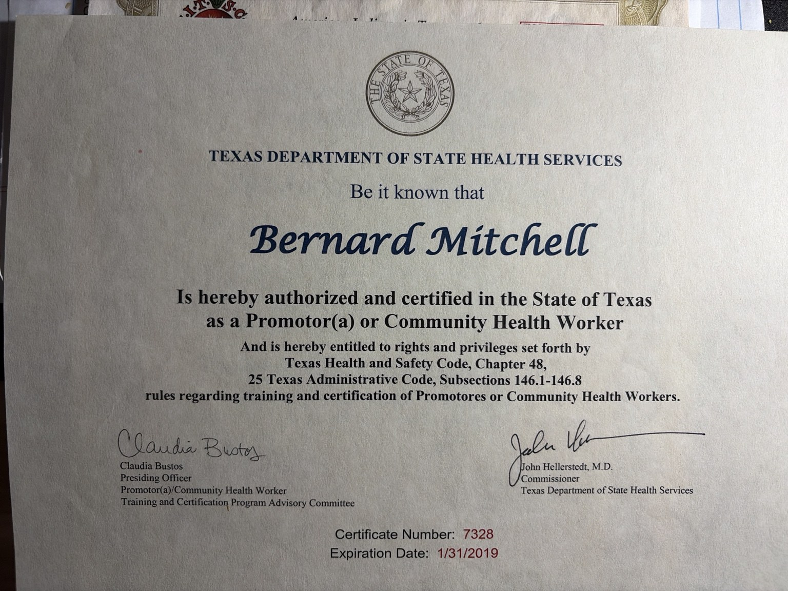
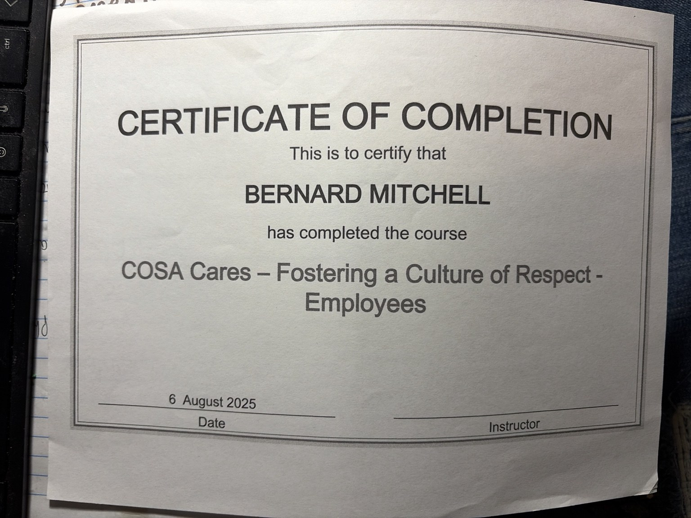
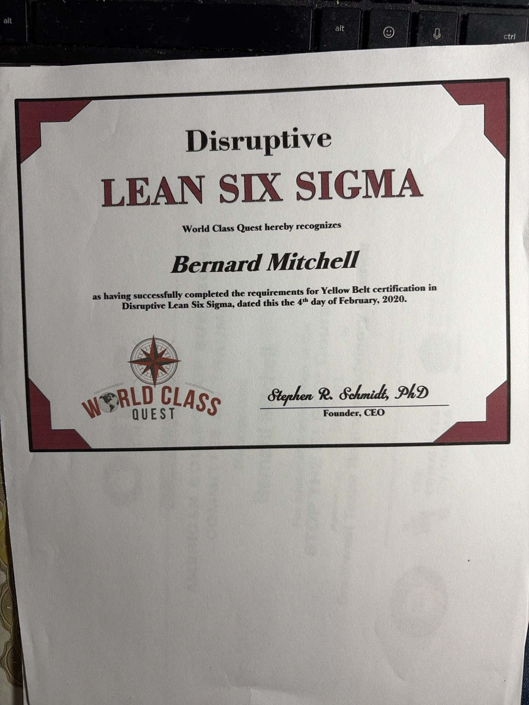
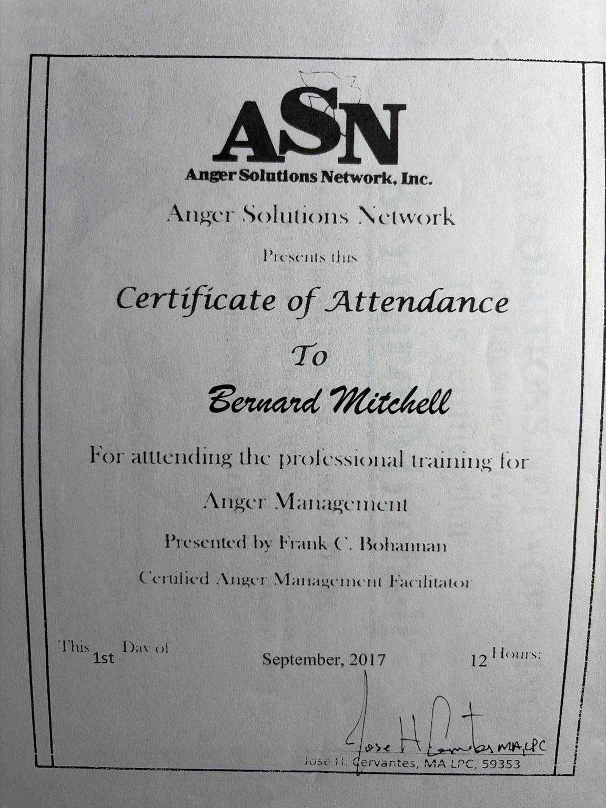
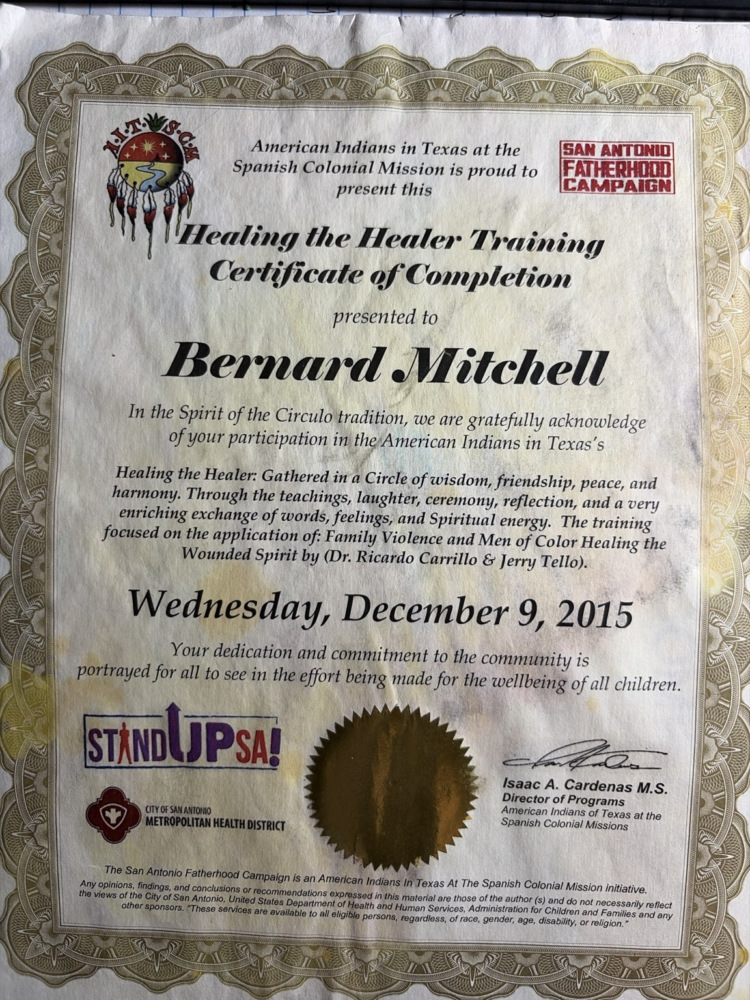
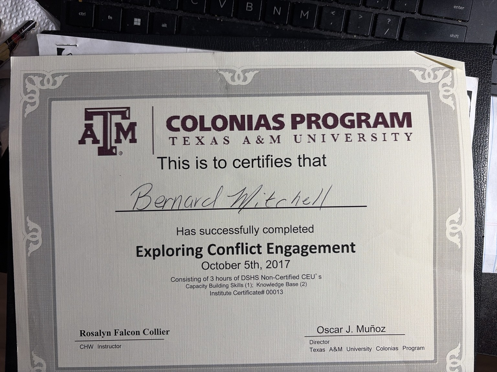

Associate in Arts
Western Texas College
Founder & credentials
Founder and Executive Director of Busi Believers Incorporated, community violence prevention leader, Certified Community Health Worker / Promotor(a), mentor, and servant leader.
Background
Bernard Mitchell brings more than 20 years of combined leadership, operations management, public service, and community engagement experience. His background includes violence prevention outreach, staff supervision, conflict mediation, youth mentorship, community health, and nonprofit leadership.
Through BUSI, that experience is organized into practical support for individuals and families facing hardship, while also promoting stewardship, leadership development, and faith-centered accountability.
Education & professional development
Associate in Arts, Western Texas College; bachelor-level management coursework, Sam Houston State University; East Central High School diploma.
Certified Community Health Worker / Promotor(a) through Texas DSHS since 2018, with continuing education in public health, safety, and community support.
Certified Group Facilitator, Making Proud Choices Facilitator, UT Teen Health facilitator training, and youth mentorship experience.
Cure Violence Global leadership courses, Violence Prevention Leadership Training, Lean Six Sigma Yellow Belt, and more than 13 years of supervision and operations management.
STOP THE BLEED, Healing the Healer, anger management training, and conflict engagement training supporting trauma-aware service.
Founded BUSI in 2022 and guided the organization to IRS 501(c)(3) public charity approval effective January 9, 2025.
Verified training highlights
Public-facing certificate images are shown here. Sensitive records such as transcripts and ID badges are intentionally not published.
Western Texas College
East Central High School • May 29, 1994

Texas Department of State Health Services • Promotor(a) / Community Health Worker documentation

National Association of Cognitive-Behavioral Therapists • June 11, 2026

Fostering a Culture of Respect - Employees • August 6, 2025

World Class Quest • February 4, 2020

Anger Solutions Network, Inc. • 12 hours • September 1, 2017

American Indians in Texas at the Spanish Colonial Mission • December 9, 2015

American College of Surgeons Committee on Trauma • October 5, 2023

Texas A&M Colonias Program • October 5, 2017
BUSI Leadership Philosophy
BUSI is not simply the name of an organization. It is a philosophy of leadership: serve before leading, build trust before expecting change, and leave every person and every community stronger than we found them.
Everything meaningful begins with connection. Bonding means seeing people beyond their circumstances, listening before speaking, and earning trust through consistency and compassion.
Leadership is not about power. Stewardship means faithfully managing every opportunity, resource, and relationship entrusted to us.
Integrity is doing the right thing when no one is watching. It turns words into action, accountability into trust, and vision into legacy.